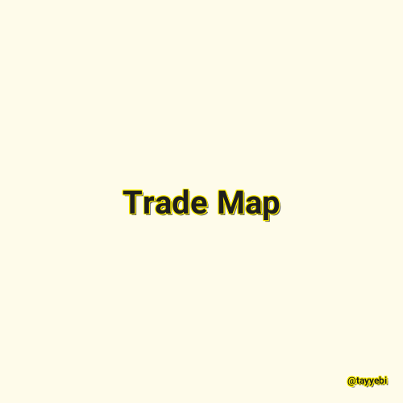

✖

Trade Map
Trade Map provides - in the form of tables, graphs and maps - indicators on export performance, international demand, alternative markets and competitive markets, as well as a directory of importing and exporting companies.
Trade Map covers 220 countries and territories and 5300 products of the Harmonized System. The monthly, quarterly and yearly trade flows are available from the most aggregated level to the tariff line level.
@tayyebi 2021-11-12 09:31:00 مطالعه پست گزارش خرابی لینک / محتوای مجرمانه / تغییر محتویات لینک